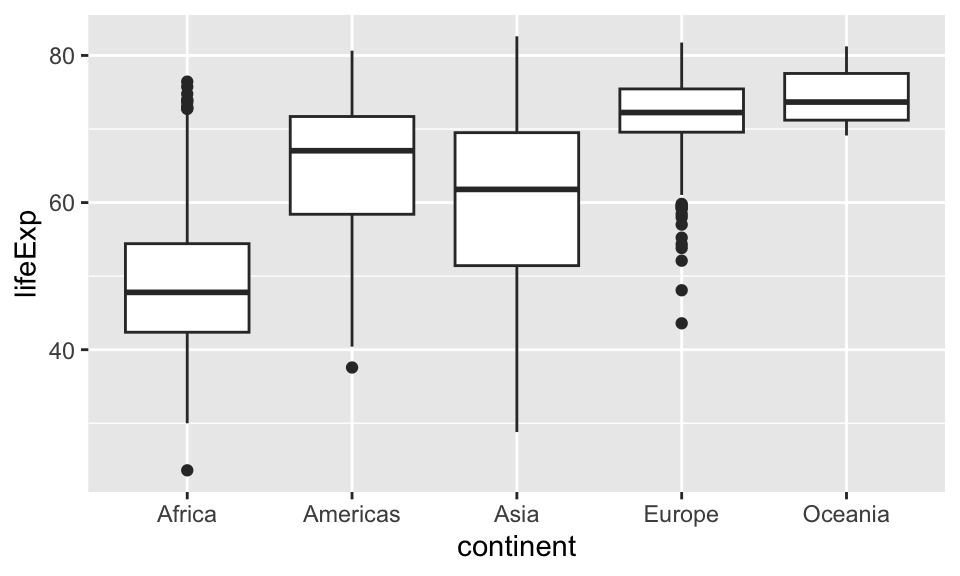
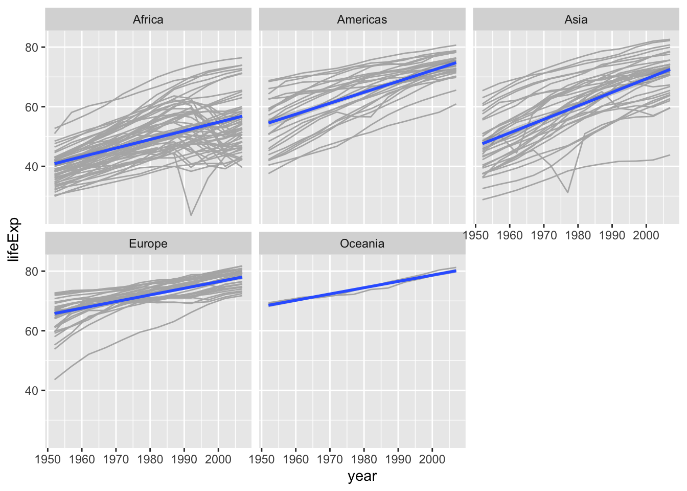
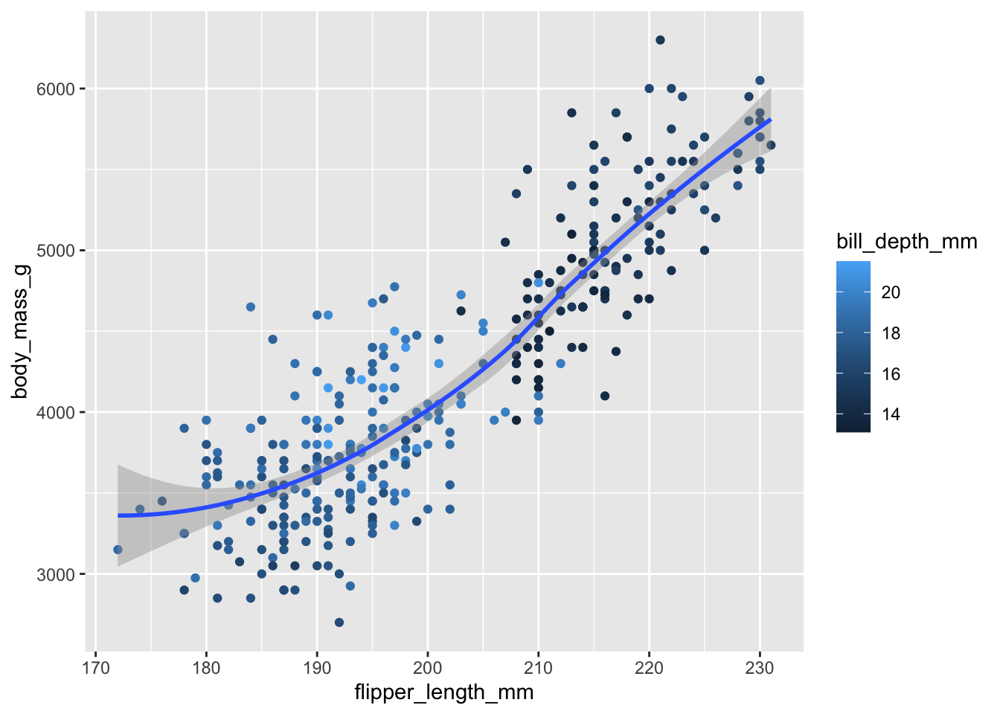

Guía 2
Laboratorio de datos 2023 (comisión: G. Solovey)
1. Estadistica descriptiva.
1.1 Dar tres ejemplos de variables categóricas y numéricas.
1.2 En el dataset gapminder del paquete homónimo (que ya trabajaron en la guía 1), una de las variables es el producto bruto per capita de los países (gdpPercap). ¿Es una variable categórica (nominal u ordinal) o numérica (discreta o contínua)?
1.3 Supongamos que definimos una nueva variable que puede tomar los siguientes valores:
\[ \begin{equation} I.gdp = \begin{cases} 0, & \text{si gdpPercap $< 1600$}.\\ 1, & \text{si $1600 \le $ gdpPercap $ < 6600$}.\\ 2, & \text{en otro caso}. \end{cases} \end{equation} \]
¿La nueva variable \(I.gdp\) es categórica (nominal u ordinal) o numérica (discreta o contínua)? ¿Cambia la respuesta si la variable \(I.gdp\) toma valores “bajo”, “medio” y “alto” en lugar de 0, 1, 2?
1.4 Filtrar el dataset de gapminder para el año 2002. Luego, para ese año, calcular la proporción de países en cada continente usando la función prop.table() y la función table(). Buscar en la ayuda de RStudio cuál es el argumento de la función prop.table().
1.5 Con el mismo filtro que el 1.4 (es decir, sólo para el año 2002), crear una variable \(I\) que valga 1 si gdpPercap es mayor que 2000 dólares y 0 si no lo es. Luego crear una tabla de 2 filas y 5 columnas que calcule la cantidad de países donde \(I=\{0,1\}\) en cada continente. Usar la función table() apropiadamente.
1.6 Convertir el vector colores a factor y comprobar que funcionó usando la función class(). Verificar las categorías creadas usando la función levels().
colores <- c('blue', 'red', 'green', 'red', 'black', 'yellow','blue','blue')1.7 Definir media, mediana y moda. ¿Qué tiene que pasar para que existan dos modas?
1.8 R no tiene una función para calcular la moda. Escribir una función de R que calcule la moda de una muestra de datos de variable categórica y probarla con el vector colores y con el variable continent del dataset gapminder. Ayuda: Usar las funciones table y which.max().
mi.moda <- function(x){
__ COMPLETAR ACÁ __
return(output)
}
# verifico que funciona
colores <- c('blue', 'red', 'green', 'red', 'black', 'yellow','blue','blue')
mi.moda(colores)¿Qué pasa si hay 2 modas?
1.9 Calcular la media y mediana de la expectativa de vida entre países en 1952 usando los datos de gapminder (variable: lifeExp).
1.10 Definir desvío estándar. ¿Por qué la diferencia en el numerador está elevada al cuadrado? Escribir una función de R que calcule el desvío estándar. Comparar el resultado de usar la función sd()de R-base.
1.11 Calcular el rango y el desvío estandar de la expectativa de vida (lifeExp) entre países tomando sólo el dataset gapminder para el año 1952.
1.12 Extra: Guardar este archivo Quarto (.qmd) y abrirlo en RStudio. Completar lo que falta para hacer un informe reproducible de esta primera parte.
2. Visualización de datos
2.1 Tenés datos de una encuesta realizada en distintas provincias de Argentina y querés saber cuántas personas respondieron a la encuesta en cada provincia. ¿Hacés un gráfico de líneas, de dispersión (scatter), histograma o un gráfico de barras (bar plot)? Hacé a mano en tu cuaderno cómo esperás que se vea el gráfico.
2.2 Estás estudiando la relación entre altura y peso de las personas. Tenés un data-set que tiene como variables la edad, sexo y peso de cada persona. Si querés describir estas variables por separado, ¿qué gráfico harías para cada una? ¿y si querés visualizar la relación entre peso y altura? Hacé a mano en tu cuaderno cómo esperás que se vea el gráfico.
2.3 Hacé un gráfico de barras que muestre la cantidad de países hay en cada continente según los datos de gapminder (recordar el ejercicio 1.4)
2.4 Querés investigar cómo varía la expectativa de vida entre los continentes. Para eso necesitás un gráfico como el siguiente:

Reproducí el gráfico de arriba reemplazando adecuadamente lo que falta en el siguiente código:
p <- ggplot(__COMPLETAR__) +
geom___COMPLETAR__(__COMPLETAR__) +
...
p2.5 Reproducir el siguiente gráfico:

2.6 (de acá en adelante, trabajar con el dataset penguins del paquete palmerpenguins). ¿Cuántas filas y columnas hay en el dataset penguins?
2.7 Dar una estadística descriptiva de la variable bill_depth_mm
2.8 Hacer un scatterplot de bill_depth_mm (en el eje y) vs. bill_length_mm (en el eje x).
2.9 ¿Cuál sería un buen geom para ver la relación entre species y bill_depth_mm?
2.10. Corregir el siguiente código:
ggplot(data = penguins) +
geom_point()2.11 ¿Qué significa el argumento na.rm en geom_point()? Usando el dataset de palmerpenguins crear un gráfico donde se requiera usar ese argumento como TRUE.
2.12 Agregar un “caption” al gráfico de arriba. Ayuda: Mirar la documentación de labs().
2.13. Recrear la siguiente visualización. ¿A qué aes debería mapearse bill_depth_mm? ¿El mapeo debe ser global o local?

2.14 Sin correr el código, predecir qué gráfico produce.
ggplot(data = penguins,
mapping = aes(x = flipper_length_mm, y = body_mass_g, color = island) ) +
geom_point() +
geom_smooth(se = FALSE)2.15 Sin correr el código, ¿estos dos gráficos van a ser iguales o diferentes? ¿Por qué?
# gráfico 1
ggplot(
data = penguins,
mapping = aes(x = flipper_length_mm, y = body_mass_g)
) +
geom_point() +
geom_smooth()
# gráfico 2
ggplot() +
geom_point(
data = penguins,
mapping = aes(x = flipper_length_mm, y = body_mass_g)
) +
geom_smooth(
data = penguins,
mapping = aes(x = flipper_length_mm, y = body_mass_g)
)Referencias
Estadística descriptiva:
- Cap. 2 de Answering questions with data. Matthew J. C. Crump, Danielle J. Navarro, and Jeffrey Suzuki.
Visualización de datos:
- Cap. 2 de R for Data Science (2e). Hadley Wickham, Mine Çetinkaya-Rundel, and Garrett Grolemund.
- Cap. 4 de Data Science. A First Introduction. Tiffany Timbers, Trevor Campbell, and Melissa Lee.